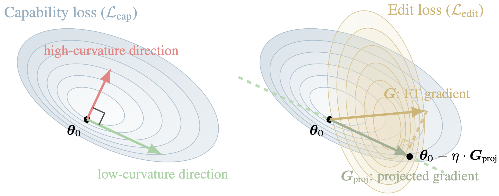
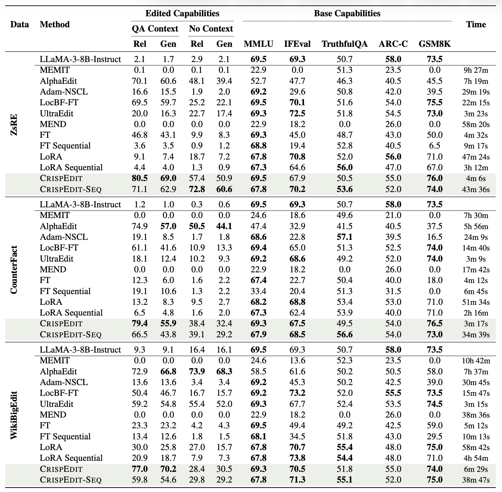

A central challenge in large language model (LLM) editing is capability preservation: methods that successfully change targeted behavior can quietly game the editing proxy and corrupt general capabilities, producing degenerate behaviors reminiscent of proxy/reward hacking.
We present CrispEdit, a scalable and principled second-order editing algorithm that treats capability preservation as an explicit constraint, unifying and generalizing several existing editing approaches. CrispEdit formulates editing as constrained optimization and enforces the constraint by projecting edit updates onto the low-curvature subspace of the capability-loss landscape.
At the crux of CrispEdit is expressing capability constraint via Bregman divergence, whose quadratic form yields the Gauss-Newton Hessian exactly, even when the base model is not trained to convergence. We make this second-order procedure efficient at the LLM scale using Kronecker-factored approximate curvature (K-FAC) and a novel matrix-free projector that exploits Kronecker structure to avoid constructing massive projection matrices.

Figure 1: CrispEdit projects edit updates into the low-curvature direction of the capability loss, improving the edit objective while preserving general capabilities.
Unlike heuristic guardrails that restrict updates to specific parameters or layers, CrispEdit solves a constrained optimization problem: minimize the edit loss subject to keeping the capability loss (measured via Bregman divergence) below a threshold.
We utilize the Gauss-Newton Hessian (GNH) to identify "safe" directions for editing. To scale this to billion-parameter models (like LLaMA-3), we approximate the GNH using K-FAC and implement a matrix-free projector. This allows us to compute projections without ever instantiating the massive full curvature matrix.
Across standard model-editing benchmarks (including ZsRE and counterfactual editing on LLaMA-3-8B-Instruct), CrispEdit consistently achieves high edit success while maintaining capability degradation below 1%. It significantly outperforms prior editors like MEMIT, AlphaEdit, and standard Fine-Tuning in preserving reasoning (GSM8K, ARC) and general instruction following (IFEval).

Comparison of CrispEdit against baselines on edit reliability and generality.
@article{CrispEdit202X,
title={CrispEdit: Low-Curvature Projections for Scalable Non-Destructive LLM Editing},
author={Anonymous Authors},
journal={Under Review},
year={202X},
url={https://openreview.net/forum?id=placeholder}
}